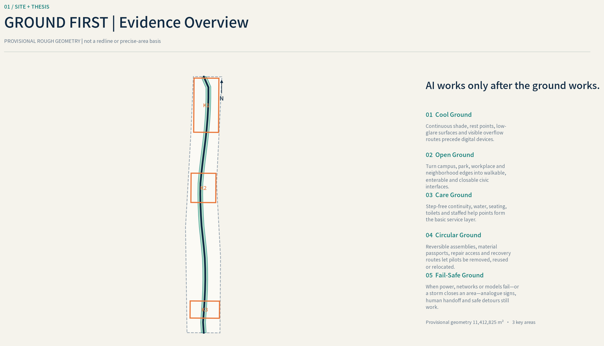
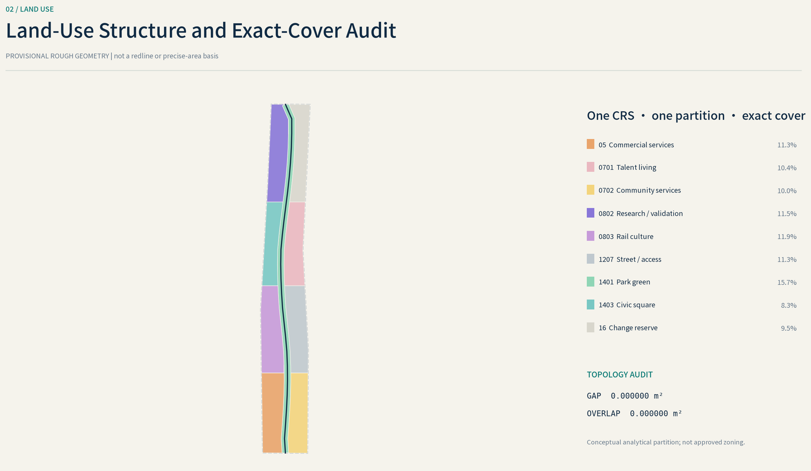
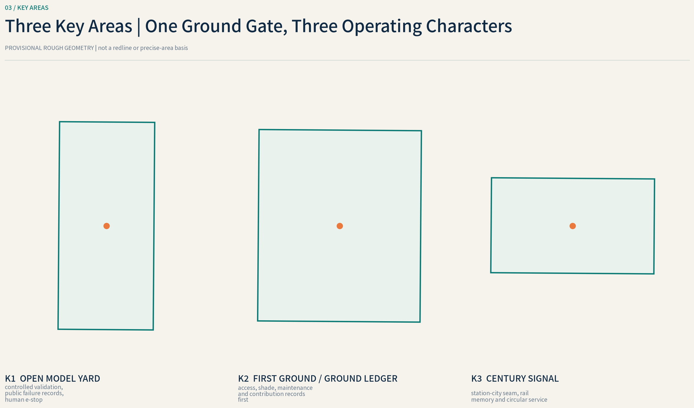
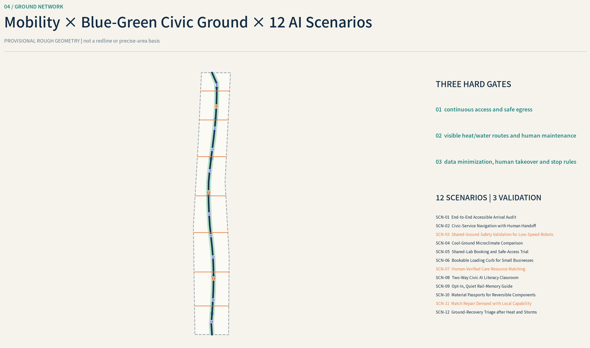
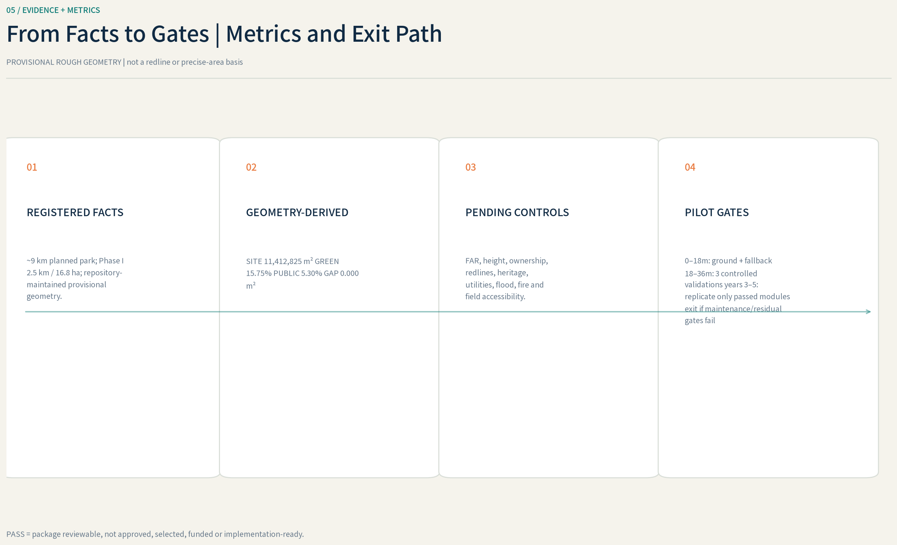

Coordinated research
Shared land, talent, capital, compute, data and real-world scenarios
Make the ground work through heat, rain, outages and daily maintenance before AI enters measurement, validation and stewardship.
Overview map · Three-level scope · Key areas · Land use · Active mobility · Blue-green public realm · Buildings · Renewal projects · AI scenarios · Core metrics · Task coverage · Self-check · Sources · Assumptions

Shared land, talent, capital, compute, data and real-world scenarios
Continuous civic ground, climatic layer and station thresholds
Open Model Yard, First Ground and Century Signal



stop on any safety defect, misleading route or missing human alternative
withdraw on erroneous eligibility decisions, missing appeal or sensitive-data leakage
stop after contact, geofence breach, failed emergency stop or repeated near misses
pause on sensor drift, invalid comparison or increased heat risk and revert to manual inspection
close booking when qualifications fail, maintenance is overdue or risk level is unclear
suspend when accessible passage or emergency access is blocked or conflicts rise
stop automated recommendations on medical judgment, rights exclusion or stale resource data
remove on inaccurate teaching, commercial promotion or inaccessible content
withdraw disputed, uncleared or noise-producing content
bar redeployment when provenance, hazardous content or recovery route is unclear
route safety-critical work, unclear qualifications or labor-risk cases to a human-only channel
switch fully to manual inspection when data are missing or model and field disagree

Official/local facts, eight background cases and font rights are registered in sources.json; figures load no external maps or photographs.
Boundaries, controls, existing buildings, ownership, utilities, hydrology, heritage and operations await formal evidence and professional review.